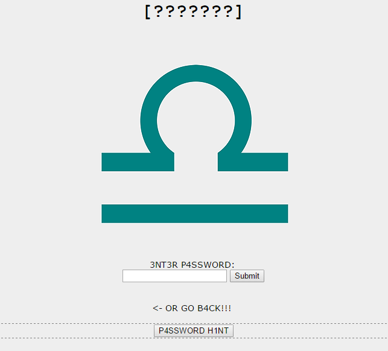
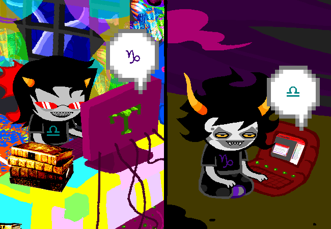

Alternia confirmed for gigantic and elaborate Jade parallel.
A quick summary: Gamzee is rapidly growing on me, Terezi is AWESOME SUPER AWESOME AWESOME, AC is the embodiment of all those tumblr posts in which people wish they could be adorable and cut some bitches at the same time, and please for the love of all that’s holy someone stop Karkat
NOW WHERE WAS I AT
I actually spent some time on this. I’m not saying how much. If I had to choose for a title for my own Sburb Land it would be something along the lines of Land of Lost Time and Bullshittery…… which doesn’t even fit the titles patterns FUCK
But screw it, look at Gamzee….That stance. Such grace…. Such concentration, those half lidded eyes…. That half open mouth…. bared teeth…. Go get some sleep……..
What? I’m just extremely concerned about those kids’ sleeping schedules…….. Look at those bags under their eyes, well Gamzee is the only one so far that doesn’t have them but it has also been implied that he eats raw soporific at every meal. Well, not raw. He bakes it.
I HAVE SUCH A GREAT TIMING FOR MENTIONING AWFUL THINGS
OH GODNESS GRACIOUS
HE EATS IT HE REALLY DOES
WHAT IN THE WORLD MAKES YOU LOOK AT THE GREEN GOO AND BE LIKE “MMMH THIS SURE IS A DELICIOUS DELICACY”
It is still piping hot but you can’t help yourself. You sneak a taste of the SOPOR SLIME PIE.
You aren’t supposed to eat that slime. It does funny things to a troll’s head.
But you were never taught that on account of a lousy upbringing. Your custodian was always out to sea.
That is where he is now. Maybe you will go outside and see if you can spot him.


Just sort of reach over…
And…

GC: H3Y G4MZ33Z YOU W4NT TO PL4Y G4M3Z3Z W1TH M3??
TC: hEy YeAh ThAt SoUnDs LiKe ThE mOtHeRfUcKiN sHiT’s BiTcHtItS!
GC: >8\
GC: 1T SUR3 1S H4RD TO 1GNOR3 TH3 W31RD TH1NGS YOU S4Y SOM3T1M3S!
SAYS YOU
MISS “HUG3 ORG14ST1C MOB1US DOUBL3 R34CH4ROUND”
At least he is as high as the Mount Everest, you are like this naturally.
GC: BUT 1M GONN4
GC: TH3 ONLY R34SON 1M 4SK1NG YOU 1S B3C4US3 YOUR N4M3 1S L1K3 G4M3
GC: 4ND NO OTH3R R34SON
GC: G3T 1T??? >:]
TC: HaHa WeLl I hEaRd Of WoRsE fUcKiN rEaSoNs To Be GeTtIn AlL aBoUt To Do SoMeThInG.
TC: :o) hOnK
GC: NO TH4T SHOULD BOTH3R YOU, TH4T R34SON
GC: WHY DONT TH1NGS L1K3 TH4T BOTH3R YOU??
tfw you are trying to insult a friend but they are so intoxicated that it flies right over their head and trolling people is your first method to establish any kind of connection with another individual
uneasiness
OKAY BUT WHY IS HE NOT LOOKING AT THE SCREEN I’M LAUGHING
How is he actually writing?? And what is he staring so pointedly at?? Who is there?? He looks at peace with the whole universe. Is he channeling his inner chakra? Connecting with his juggalos self? Who knows.
GC: NO WOND3R V4NT4S C4NT ST4ND YOU
Five points to GC!!! Miss Seer of Mind strikes again! That is indeed the reason why Mister Vantas is so annoyed by Gamzee. Karkat is especially irked by people he cannot get a reaction out of when insulting them. We’ve had a precedent…… Strangely enough he is way happier with himself if you do insult him back. …I’m starting to suspect that he actually enjoys being angry……
GC: BUT WHO C4R3S 4BOUT H1M, W3R3 GO1NG TO H4V3 SOM3 MOTH3RFUCK1NG SH1TTY B1TCH3S PL4Y1NG TOG3TH3R!
SHITTY— OH MY GOD
SHITTY BITCHES
GC THAT COULD BE EASILY MISUNDERSTOOD
GC please
Okay, I NEED to know her name. Listen, if after this conversation I do not find myself into GC’s room, for better or for worse, I’m going to chuck a chair to someone. I’m gonna. For real. This is worse than when I was waiting for Rose’s introduction.
GC: OR WH4T3V3R YOU S41D
TC: sO iS tHiS tHe GaMe I’vE hEaRd AbOuT?
TC: ThE bIg MyStErY?
GC: Y34H
TC: wHoA oK uHhH…
TC: ThIs Is GoInG tO bE fUcKiN iNsAnE.
Weirdly fitting considering that one time she said that you all turned out to be crazy in some way or another.
TC: bUt CaN wE pLaY a LiTtLe LaTeR?
TC: I’m OuTsIdE kEePiNg An EyE oUt HeRe FoR tHe OlD gOaT.
Gamzee, I wish I didn’t have to say this but for the sake of your parallel to Jade your guardian will probably turn out to be dead. That’s the hard truth. Relish the memories you have made with that son of a bi— goat. Son of a goat. That’s what I was going to say. What does it mean? Well, hon, here on Earth it is a term of endearment to those who we cherish and aBANDON US TO GO SAIL THE SEVEN SEAS NO I’M NOT ANGERED I AM CALM.
TC: yOu KnOw HoW iT iS wItH fAmIlY.
GC: NO, NOT R34LLY!
GC: 4DURRRR DURR DURP
TC: Oh YeAh…
GC: DURRRRRRRRRRRRR
NO
NO NO NONONO NOOOO
STOP TALKING
GO TO JAIL
I will just ignore this. GC?? An orphan?? I don’t know what the fuck you are talking about, she is in a lovely household and taken care of like she deserves SHUT UP
GC: W4Y TO GO, HOW DO3S TH4T STUP1D BOTTL3D SYRUP OF YOURS T4ST3 W1TH YOUR HOOF SO F4R UP YOUR MOUTH???
GC: >:]
TC: sOoOoOoOrY.
TC: AnYwAy I’lL gO iNsIdE iN a WhIlE, wHy DoN’t YoU gEt KaRkAt To FiRe Up ThAt MoThErFuCkEr WiTh YoU?
TC: hE lIkEs GaMeS.
GC: OH NOOOOO.
GC: GOD C4N YOU 1M4G1N3 4LL TH3 B1TCH1NG 4ND MO4N1NG?
GC: 1 US3D TO TRY TO PL4Y STUFF W1TH H1M BUT WOW D1D 1 L34RN MY L3SSON.
Once playing games with Karkat he is an ass, twice playing games with Karkat, you’re the ass.
TC: AlRiGhT, wElL i’Ll TrY tO gEt In AnD gEt Up On My ChIlL rEaL sOoN aNd We CaN pLaY.
TC: jUsT gIvE mE a MiNuTe!
GC: BULLSH1T!
GC: YOU KNOW YOUR3 JUST GO1NG TO S1T TH3R3 ON TH3 B34CH 4ND SP4C3 OUT 4ND LOS3 TR4CK OF T1M3.
GC: H3LLO?
GC: G4MZ?????
TC: WhAt?
TC: oH mAn SoRrY.
TC: I sPaCeD oUt,
HOW MANY TIMES DID HE DO THIS WHILE TALKING TO HER
INCREDIBLE
FUCKING INCREDIBLE
DiD yOu KnOw HoW bEaTuFuL tHe SoUnD oF tHe OcEaN iS?
TC: hAvE yOu EvEr EvEn SeEn ThE oCeAn?
TC: oR i MeAn SmElLeD iT…
TC: SoRrY.
GC: >:[
THIS CONVERSATION IS A WRECK JUST LIKE ITS PARTICIPANTS
Okay but he gets sidetracked more easily than Dave when you put him in front of plushie rumps so I really don’t envy the one who will end up being their coplayer…. *looks pointedly at GC* I reaaaally don’t envy that mysterious person.
But for nowwww…. Time to meet h—
> Karkat: Get some programming done.
UUUUUUGHHHHHHH
What is up with Karkat’s fixation with getting things done? Relax, dude. Take it easy. Build some pillow fortresses, stage the climax of your favorite movie, spend time fantasizing about your romantic escapades with Liv Tyler, gently caress your Will Smith posters…. seriously, if I have to agonize over watching you do completely unimportant things at least let them be adorable things. You will never reach Cinnamon Roll Status with that attitude. you have the looks, but it’s what’s inside that matters the most.

Karkat is….. Preparing himself to teleport to another universe….? Teleporting WITH the universe? Into Sburb?? Creating the fucking Rift???? Which we still don’t know if to capitalize because nobody fucking bothered asking??? I have no effing idea.
Umh. Alternatively he is just setting up things for his journey to the afterlife. I can’t read this crap, sorry.
Finally some peace and quiet. Now you can bear down on your coding. This will surely last all evening, without interruption.
You reopen one of your ~ATH projects you started recently. You are still horsing around with the conditions for terminating the loops.
What many ~ATH coders do is import finite constructs and bind the loops to their lifespan. For instance the main loop here will terminate on the death of the universe, labeled U. That way you only have to wait billions of years for it to end instead of forever.
Yeah, that’s…. convenient, I guess?? It’s not like you could tell the difference you won’t be around that long. Doesn’t that make Snowman basically immortal though?! Two billion years is just too much, after a while you just get bored of standing around being badass. Especially if you have to deal with people like Slick everyday.
Your hacker buddy is obnoxiously good at it. He’s sent you some files which you still don’t understand, but you’re not going to admit that. He is even better at making viruses than you, which really gets stuck in your nook.
YEAH KARKAT BUT WHAT IS A NOOK?? WHAT IS IT???
The one true Ultimate Riddle.

We are importing…. two other universes? And also there is a lot of dying going on. What the heck is this code even. Something happens when the universes die?? The tilde is a destructor so when the first universe is destroyed EVERYTHING BUT the second one also is (because the exclamation point is like putting a negative before it)?? BUT BUT BUT the braces stand for “if” so. Hmm. THEREFORE.
………..Yes I am definitely not googling this as I go along and I am an expert in programming.
HMMM. When the two first events unfold something happens in the first universe that makes the first one die wait weren’t the universes dead already??? Maybe this is the description of how it happens?? So IF this something happens in the first universe, the second one is destroyed, but as that happens something happening in the second universe kills the first one?? Wouldn’t that require simultaneity?? And on another note, a totally unrelated question for TA: WHAT THE FUCK ARE YOU DOING WITH YOUR LIFE
This code, when executed, immediately causes the user’s computer to explode, and places a curse on the user forever, along with everyone he knows, and everyone he’ll ever meet.
?????????? I FUCKING GUVR UP. I WAS TRYING TO FUVKING DECIFER THAT YPU ASSHOLES
Where the FUCK was THIS written. This code is absolutely fucking useless. You can’t even send it to people who you hate because you would be fucking cursed as well. Unless you are aiming to damage someone anonymously and you are an international spy or something. Does TA work as an international spy for Alternia? Kid is suspicious. You know who is suspicious also?? AA. You don’t go around with a chumhandle like that and expect me to trust you.
Not surprisingly, later on you would run this code in a fit of stupidity.
OH FOR THE LOVE OF JUGGALOS HEAVEN
NOT EVEN ACCIDENTALLY
IT WASN’T EVEN AN ACCIDENT
You don’t know how he does stuff like this. What does this even mean? It’s nonsense. Is it even syntactically viable?? Are you allowed to color text like that??? ARGH.
You can if you are cool enough, Karkat.
Oh speak of the devil. Here he is bugging you about something. Time to put on your game face and pretend you don’t think very highly of his abilities.
I-it’s not like he admires you or anything, b-baka….

True friendship is when your BFF makes you smash your keyboard 130 km/h while getting showered by the detached keys like you’re both under a cherry-tree in full bloom. Like in the silly animus and mangos.
twinArmageddons [TA] began trolling carcinoGeneticist [CG]
TA: KK dont fliip your 2hiit about thii2 but iim 2ettiing you up two play a game wiith 2ome people.
KK!!!;;; OH MYGOSH. THAT IS —THE CUTEST NICKNAME— THE CUTEST
CG: WHY WOULD I FLIP MY SHIT ABOUT THAT.
TA: becau2e you fliip your 2hiit about everythiing.
CG: WELL WILL YOU LOOK AT THIS.
CG: HERE IS MY SHIT, AND YET IT REMAINS UNFLIPPED.
CG: JUST SITTING THERE ON THE SKILLET, GETTING BURNED ON ONE SIDE.
The trick is in the fact that he will flip his shit about the fact that you assumed he would have flipped his shit. The moral is that there is no escaping the acrobatic promenade of the shit when it belongs to Karkat Fucking Vantas.
CG: IT’S A MIRACLE.
TA: oh no are you iinto miiracle2 now two becau2e iif you are youre fiired preemptiively from the game.
CG: FUCK NO.
TA: ok niice.
CG: MIRACLES ARE LIKE POOP STAINS ON GOD’S UNDERWEAR.
TA: eheheh makiing fun of people2 reliigiion2 i2 the be2t thiing two do.
CG: THAT’S WHY HE HIDES THEM, THEY’RE FUCKING EMBARRASSING.
CG: GOD LAUNDERS IN MYSTERIOUS WAYS.
I ABSTAIN
FROM COMMENTING ON THIS
BUT BASICALLY
THEY ARE TWO BIG GIGANTIC ASSHOLES
ITS NOT LIKE GAMZEE GOES AROUND ASKING IF YOU HAVE ACCEPTED THE MIRTHFUL MESSIAHS AS YOUR LORDS AND SAVIORS . … ……… …..
OH BUT. How cute would that be though???? Gamzee all dressed up knocking on doors. He offers a peace sign and the whole ICP discography, if you buy today you also get a sample of face paint and a free stack of Faygo. He offers to teach you the ways of the juggalos and tells you to open your heart to the miracles……Pretty sure Alternians would kill him on sight though.
What was I talking about again? OH RIGHT RIGHT. Two assholes not knowing what their place is and being two weenies. I WILL KICK YOU SO HARD THAT YOU WILL TAKE ORBIT AND ALL THAT WILL BE SEEN OF YOU FROM THE PLANET ARE TWO TWINKLES IN THE SKY, TEAM ROCKET STYLE. YOU WILL END UP ON THE FREAKING PINK ROOM
TA: eheheheheh riight on but let2 2hut our mouth2 a 2econd and talk about thii2 game.
TA: iitll only be a 2econd really you dont have two do two much.
A 2econd, he says. A 2ECOND. If by that you mean the rest of his natural life, then you are right, that’s exactly the amount of time this will take.
TA: well the 2hort 2tory ii2 that iit2 an iimmer2iive 2iimulatiion that you play wiith a group.
TA: the long 2tory ii2 that the fate of our ciiviiliizatiion depend2 on u2 playiing iit.
TA: heh ii gue22 the long one wa2 2horter than the 2hort one FUCK.
Noooo!!!!!! TA!!!!!!! I am the one who says FUCK! I am the one cursing comedically!! The fate of your race depends— You’re not gonna save it. You’re gonna condemn it!!! He thinks he is saving everyone FUCK
CG: THAT SOUNDS LIKE MELODRAMATIC BULLSHIT BUT COMING FROM YOU COLOR ME UNSURPRISED.
TA: 2crew you vanta2 thii2 2hiit2 more real than kraft grub2auce.
TG: this shits more real than kraft mayo
We now know what grubsauce is. Thank you for your assistance, Mr Strider.
CG: SO YOU MADE THIS GAME?
TA: no no.
THANK THE WHOLE POPULATION OF HEAVEN AND HELL
TA: more liike ii adapted iit.
FUCK
CG: FROM WHAT.
TA: 2ome crazy technology AA dug out of 2ome ruiin2.
TA: havent you talked two her about iit?
CG: MAN, NO.
CG: I CAN’T TALK TO HER, SHE’S SO SPOOKY.
Did you learn fucking nothing from every movie ever filmed about finding ancient games in some remote ass place in the universe??????? Have they been strategically erased from the history of every planet in which the game has gotta be played??????? This is a travesty.
AND AA CONFIRMED FOR SUSPICIOUS AND SPOOKY GIRL.
No, but actually, with a chumhandle like that I just imagine her going around with an “the end is nigh” sign and scaring little children away.
CG: I DON’T KNOW WHY MOST OF OUR FRIENDS ARE SUCH PSYCHOS.
TA: probably iit2 becau2e mo2t troll2 are.
TA: iif you heard what ii heard every niight ii mean WOW FUCK.
CG: NO LET’S NOT TALK ABOUT YOUR WEIRD MUTANT BRAIN.
WOW FUCK
WOW THE FUCK DO YOU MEAN
Is he haunted by the ghosts of his Past, Present and Future or something
Also mutant?? Mutant as in monster, right?? Not mutant as in that suffers from a mutation, right??? And not a mutation that has anything to do with Karkat and his ectobiology session, right??? Because his chumhandle, name and everything that revolves around him doesn’t just scream “keep him away from any kind of genetics procedure forever”, right?? I’M JUST WORRIED
CG: AND DON’T SCAN MINE OR WHATEVER, IT’S OFF LIMITS YOU DOUCHE.
TA: ii told you liike a biilliion tiime2 ii cant do that you nub2lurping fuckpod.
He’s not some kind of mad scientist, KK. Just wear a tinfoil hat on your head if it makes you feel safer like that. It’s not like the horns are going to get in the way.
CG: WHY ARE YOU TWO UP TO THIS SECRET STUFF.
CG: WHY HAVEN’T YOU TOLD ME ANYTHING ABOUT THIS?
The gist is that our Karkat is jealous that he has been left out from all the juicy details. Who is this AA girl, huh?? ;) ;)
TA: KK iim 2orry but really iit2 kiind of a priivate matter between me and her and iid appreciiate iit iif that wa2 re2pected.
CG: OH GOD.
CG: STOP BEING SO SENSITIVE.
CG: IT’S A REPUGNANT QUALITY.
WHAT AN HYPOCRITE YOU LITTLE PANSY AND SERENDIPITY WATCHER
TA: ok how about you take your own adviice you are 2uch a blubberiing hypocriite.
YEEEEAAAAAHHH!!
TA: youre lucky iim 2o fuckiing magnaniimou2 and chariitable cau2e otherwii2e there2 no chance iid wa2te my tiime on you.
NOOOOOOOOO!!!!! Go there in the corner and reflect on what you just said, TA. That was really mean of you.
CG: WHAT A LOAD OF SHIT, THIS ACT THAT YOU ACTUALLY THINK YOU’RE A HOTSHOT, YOU KNOW YOU HATE YOURSELF.
WHAT????????? WHAT???????????????????????????? I WILL FUCKING PUNCH YOU KARKAT
TA: nobody hate2 hiim2elf more than you iidiiot.
CG: YEAH WELL I HATE YOU WAY MORE THAN I HATE MYSELF, AND THAT’S FUCKING SAYING SOMETHING.
CG: IN FACT I HATE YOU MORE THAN I HATE MYSELF AND YOU HATE YOURSELF AND YOU HATE ME COMBINED.
TA: oh fuck that noii2e iin every leakiing oriifiice iit2 got you know ii hate the combiined product of you and my2elf more than you could ever begiin two hate me and my2elf and you and your2elf on your wor2t day 2o FUCKIING DEAL WIITH IIT.
You guys……This is the dumbest and most inane exchange so far in the webcomic. And for your information there was this one time in which GC and John did nothing but laugh idiotically at each other for five paragraphs without any reason whatsoever. ….That convo is actually in the “pesterlogs that made me shed actual tears” list. In company of the first GA/Rose pesterlog that is not even funny but I FUCKING CRIED FOR FIVE MINUTES. It was the random exclamation points. Also a John/CG pesterlog but I don’t remember which one…. The one in which he randomly started to speak Spanish??? JESUS CHRIST. And the one in which AT went all No Homo on Dave…Plus you guys don’t really hate each other and everyone can tell that so please shoosh and keep talking about the AA girl that is in no way incredibly suspicious nor has access to any kind of outside information. Obviously.
CG: OK, TIME OUT FOR THE IDIOT.
CG: THE IDIOT GETS A TIME OUT AND SHUTS UP FOR A SECOND.
CG: THAT’S YOU.
CG: JUST TELL ME WHAT TO DO ABOUT THIS GAME.
TA: ok well iill 2end you a download 2oon.
TA: iim 2ett1ng up two team2.
TA: liike two 2eparate competiing team2 2o that there2 a better chance of at lea2t one group wiinniing.
TA: and al2o ii gue22 two 2ee which one can wiin fa2ter.
CG: OK LET ME GUESS.
CG: THERE’S A RED TEAM AND BLUE TEAM, RIGHT?
also water is wet, the sky is blue and Karkat needs anger management courses
TA: yeah.
TA: youre on the red team.
TA: ii wiill be the leader of the blue.
CG: OK, THEN I GUESS I CAN PICK MY TEAMMATES THEN?
TA: uh…
TA: bro youre not the red team leader.
bro
bro no offense
I love how he only used the term to soften the blow
TA: ii piicked GC for that.
CG: WHAT????????????????????
*mmmmh whatcha say 10 hours loop version starts playing in the backgroung* Time stops for Karkat. His eyes get wide, His mouth hangs open and his fists clench. Breathing only comes in short little gasps. The annoying sound of the message notification from his former buddy is nothing but buzzing in his ears. It sounds like Betrayal. Like grating on a chalkboard. How could he do this to him. How could he. Shatter his dreams with those ugly ass mustard colored words. HOW COULD HE. He plots for revenge.
Meanwhile TA
kk?
are you there
iit2 been ten miinute2
oh my god ii kiilled hiim
TA: dude ii diid NOT thiink youd be iintere2ted iin thii2 dont act all offended.
CG: OH WOW NOW I SEE.
CG: REALLY FUCKING CLEVER, PICKING THE BLIND GIRL TO LEAD THE TEAM YOUR COMPETING WITH.
THE BLIND GIRL CAN AND WILL WRECK YOUR SHIT IN THE FUTURE, BUDDY
CG: I KNEW YOU WERE CHEATER LOWLIFE FUCKING SCUMBAG WITH NO SCRUPLES OR SELF ESTEEM AND WERE BASICALLY WORTHLESS ON EVERY LEVEL, BUT SOMEHOW I’M STILL DISAPPOINTED IN YOU.
TA: yeah ii am 2uch an iidiiot for not rewardiing your bubbly per2onaliity and iimpeccable people 2kiill2 wiith a leader2hiip giig.
Why are we describing John Egbert now. Jokes aside, having good people skills is not the only thing, crazily enough you also need someone like Karkat with a certain drive and sense of responsibility. Karkat wouldn’t be a bad leader, he just needs to stop throwing tantrums worthy of a 5 y/o kid in a toy store. Also he has incredibly shitty people skills.
TA: what an iincon2iiderate knuckle2ponged a22hole ii have been.
CG: I AM A HATCHED LEADER AND YOU KNOW IT.
TA: ii know your fiilthy 2eedflap ii2 flutteriing iin the profane breeze that2 2hootiing out your 2tiinkiing meal tunnel.
TA: ii do know that much.
CG: HOW DO YOU GET OUT OF YOUR COCOON IN THE MORNING KNOWING YOU’RE THE WORST THING A UNIVERSE WAS EVER RESPONSIBLE FOR?
OH JESUS CHRIST WILL YOU STOP THIS
No, that’s not an imprecation I’m actually asking for Jesus to make them stop this bullshit IT’S SO FUCKING ANNOYING
CG: ALSO IT MUST BE HARD WITH YOUR HANDS TO PERSISTENTLY BOTHERING EVERY MUTATED SET OF GENITALS PEPPERING THAT GHASTLY HUSK YOU PAWN OFF AS A BODY.
AAAAAUUUUGH— Wait…. set of…… AAAAUUUUGGHHH MY EYES ARE BLEEDING THX A LOT
CG: HAS A FEMALE EVER LOOKED AT YOU WITHOUT AT ONCE TURNING SKYWARD AND ERUPTING LIKE A VOMIT VOLCANO, ANSWER ME THAT.
TA: thii2 ii2 2o iimmature, iim ba2iically ju2t laughiing here at how iimmature you are.
You started this, you son of a fuck.
TA: liike ii really giive a fuck who the red leader ii2.
TA: you want two be the leader fiine talk two GC about iit.
If Karkat does become the leader the other team (and it is looking that way) there will be a mutiny three hours into the game. TA and GC are gonna team up together. GC didn’t want to in the beginning but after Karkat managed to almost break her auricular sponge clots for the third time she just gave up. They gave everybody but Karkat the chaptas for some cool jetpacks and hacked his gates so that he is stuck on his planet. Every once in a while they will fly over his head and he will shake his tiny fists in the air while swearing like it’s the last thing he will do. They will just give him double middle fingers from the sky.
CG: I GUESS THESE CONVERSATIONS WE HAVE DO GET KIND OF EMBARRASSING IN RETROSPECT.
CG: ARE WE NOT FRIENDS ANYMORE BECAUSE OF STUFF I SAID.
TA: eheheheh you LIITERALLY a2k me that every tiime are you jokiing.
TA: ii cant even tell anymore.
That would be adorable if I wasn’t just recovering from 5 paragraphs of you two shitting on each other and your friendship. But I’ll take it because I’m feeling just as magnanimous as Mister Grub2auce over here.
CG: IT’S A JOKE MORON.
CG: HONESTLY I’M JUST GLAD NOBODY ELSE IS PRIVVY TO OUR CONVERSATIONS.
*looks in the camera like I’m on The Office*
CG: ACTUALLY WHY DON’T WE MAKE A PACT TO DELETE THIS ONE FROM OUR LOGS, I’M JUST SHUDDERING HERE SCROLLING UP AND READING THIS.
TA: yeah ok.
Listen, TA is an adorable little nerd, but please don’t make him talk to Karkat ever again. I was mentally scarred by this pesterlog.

Sounds like someone downstairs is getting pretty crabby. This is not an encounter you are looking forward to. You’ll probably put it off as long as you can manage.
That is so not Karkat’s guardian in there, that’s for sure. Sounds more like someone he is begrudgingly tending to, to be honest. Could be a pet, could be the crab we have seen before? That would make the use of the word crabby the most awful pun I have ever read. But it has been aptly demonstrated that kids can’t have a pet and a guardian. Unless one of them iS DEAD— KARKAT. KARKAT VANTAS PLEASE TELL ME YOU ARE NOT ALSO AN ORPHAN WHAT THE FUCK.
WELL. Given that he is going to prototype a crab and he lives nowhere near Gamzee or the sea, I’m just going to say that this is an elaborate Jade parallel and the crab lives in the house, (alien crabs apparently grumble) that Karkat was abandoned on the shore when he was very little and a bunch of empathetic hermit crabs took it upon themselves to make him grow up strong and healthy (and crabby)!!!! This is a very serious theory, no but seriously what’s up with this, I need to know.

PLEASE BE GC’S HIVE PLEASE BE GC’S HIVE PLEASE BE GC’S HIVE PLEASE BE GC’S HIVE

BINGOOOOOO
YOOO YOOOOOOO
ARE THOSE DRAGONS

Standing in this room for extended periods of time could probably permanently blind you if you are not careful of the strong colors, but GC doesn’t have this sort of problems now, does she? Though she can SMELL colors, so she made this place as fun as possible for herself, it’s not a room, IT’S AN EXPERIENCE. I just hope she doesn’t feel dizzy after a while??
There are serious looking books everywhere! Not even there just for display, they must have been recently sniffed, since some are standing on the ground. Also either there is rope on the ground, or ……it is the outline of a freshly discovered body on a crime scene. ……Girl, we’ve dubbed your murders as accidental so far, don’t disappoint me!
ALSO ALSO calling it right now that she eats the pages to read
Your name is TEREZI PYROPE.
Hello, Terezi!!! Yours is a very interesting last name, but we will get to that later, alright??
You are pretty enthusiastic about dragons.
I WOULD NEVER HAVE GUESSED BUT THIS IS STILL THE BEST WAY TO OPEN A INTRODUCTION EVER
But you have a PARTICULAR AFFECTION for their COLORFUL SCALES, which you gather and use to decorate your hive.
ARE THOSE THE SCALES OF ACTUAL REAL LIVING DRAGONS OR ARE THEY FAKE PLEASE THIS IS IMPORTANT
Though you live alone, deep in the woods, you surround yourself with a variety of plushie pals known as SCALEMATES. You often spend your days with them in rounds of LIVE ACTION ROLE PLAYING.
*whispers* YOU ABSOLUTE NERD
Okay I shouted it, I was lying. She would so get along with Grandpa and Bro. They are right up her alley.
You used to engage in various forms of MORE EXTREME ROLEPLAYING with some of your other friends before you had an accident.
*swiftly files this accident under things that absolutely won’t be brought up again nor have any sort of relevance*
She played hardcore real life game sessions of Dungeons&Dragons that would last for days and she played as a dragon, and wielded a sword and fuck the losers who said that dragons cannot wield swords!!! (That is to say, GA, stop being so nitpicky, gosh)
You take an interest in justice, holding particular fascination for ORCHESTRATING THE DEMISE OF THE WICKED. You have taken up study of BRUTAL ALTERNIAN LAW, and surround yourself with legal books.
I SHOULD HAVE SEEN THIS COMING BUT I DIDN’T
WAIT DAMMIT
JUSTICE IS BLIND
LADY JUSTICE, LIBRA, SCALES, GALLOWS
You have no need for copies printed in TROLLBRAILLE, because you can SMELL AND TASTE THE WORDS. You hope one day to join the honorable ranks of the LEGISLACERATORS.
That’s a lawyer that also slays!!! It sooo fits her! She easily tricks people, knows her way around words, she is well-versed in psychology, therefore she would be versed in criminology too, and slays people just fine, I bet. That’s the perfect job, too bad Sburb had to ruin it for her. So far we have a threshecutioner, a legislacerator, did Gamzee say anything?? I don’t think so. Honestly I think he just doesn’t have anything planned. Gotta be chill, you know? Thinking about the future is not motherfucking chill now, is it? He just wants to stay true to himself. “I DiDn’t cHoOsE ThE JuGgAlO LiFe, ThE JuGgAlO LiFe cHoSe mE” GODDAMMIT HOW DOES HE WRITE LIKE THIS. IT TAKES HOURS.
Your trolltag is gallowsCalibrator and you SP34K W1TH TH3 NUM3R4LS TH3 BL1ND PROPH3TS ONC3 US3D.
Girl, that’s just John’s birthday. Wait. I just realized that John has been killed on the day of his birthday— TEREZI!!!! …….I’m sorry, sometimes the alternate timeline feelings just… resurface…..
Okay but seriously. SERIOUSLY. Why would some prophets care about 4/13?? Unless John is secretly the next Messiah (which he is not) I will say that it is something that regards Earth. And I will say that it is something that regards the day in which Earth started existing. Do I need to say anything else??
You are presently the leader of the RED TEAM, poised to begin a mysterious game with 5 other friends, in direct competition with another 6 of your friends, comprising the BLUE TEAM.
That’s what you like to THINK
Meanwhile Karkat has gathered all the data of Terezi’s last year adventures in FLARP. Every fucking game session. He has all of the statistics organized neatly. Every victory but most importantly every LOSS and MISTAKE, every time she fucked up on a strategic move. There are graphs. He has made a freaking power point. 101 REASONS WHY TEREZI PYROPE SHOULD NOT BE THE LEADER BUT IT SHOULD BE ME INSTEAD BECAUSE I WAS BORN AND HATCHED FOR THIS SOLE PURPOSE AND THE POSITION UNQUESTIONABLY BELONGS TO ME
tl;dr: FUCK OFF PYROPE
What will you do?
> Terezi: Cut to the chase and begin LARPing immediately.
I don’t know what I expected. Wait… LARP is live action role play…. FLARP is??? fffffantasy live action role play?? Fun?? FUCKING LIVE ACTION ROLE PLAY!! Run for your lives, fuckers!! OH GODNESS!! FATAL live action role play!!!
Terezi, spill the beans!!! We all know of that night, long ago, getting rid of that body deep in the woods!! “1T W4S 4 C4SU4LTY” you said, “NO ON3 MUST KNOW” you said. Well now we know!

We’re heading straight to Courtroom Drama Land and as a proud Ace Attorney fan I’m SUPER UP FOR IT
HIS HONORABLE TYRANNY
I bet his verdicts are so wise and just.
It’s pretty hard to live action role play when there is no one who is alive nearby.
Awwww. That must suc—
But all of your Scalemates are alive to you.
SO. How hard did you hit your head during this so called accident of your—
At least you pretend to believe that to annoy people.
I LIKE YOU AND I LIKE THE WAY YOU THINK
A LOT
You prepare a new campaign for one of your favorite scenarios, COURTBLOCK DRAMA.
OH DEAR. It is as I feared. So Terezi, give us the full debrief! Lay it down for us!
His HONORABLE TYRANNY presides. On trial is an especially detestable fellow, SENATOR LEMONSNOUT. You have sparred with this scumbag before. Tonight he faces justice.
Holy shit. What did the yellow bastard do??? It is the yellow one right??
You will play the role of the prosecuting attorney. On Alternia, there is no such thing as a defense attorney, or a defense. In a courtblock, the word defense itself is offensive.
Umh. Now not to be a killjoy or anything, but it doesn’t seem that the presence of an attorney is really needed after all, you’re just doing your little jig before they get executed, Terezi. It is… just a formality… so that Alternia doesn’t face controversy and everything goes smooth as they kill whoever they please. …. Sorry?? Maybe I’m TOTALLY WRONG but that’s definitely the vibe I’m getting.
Terezi: Interrogate.

INTERROGATE MEANS TALKING
WHATEVER YOU THINK YOU ARE DOING WITH THAT CANE I SUGGEST YOU DROP IT IMMEDIATELY OR THE ONLY WORDS YOU WILL BE HEARING ARE THE AGONIZING SCREAMS OF LEMONSNOUT
Most of the interrogation is in the intimidating silence.
I THOUGHT SO—
> Terezi: Slap him around a bit.
TEREZI
THIS IS ANIMAL CRUELTY YOU ARE NOT A TRUE DRAGON LOVER!!!!

That scalemate must be made of fucking marble if it made Terezi’s arm bend like that. Either that or troll’s limbs have retractile bones that turn into tentacles at necessity. Very useful when you gotta retrieve something that fell behind the furniture. But not when you are slapping someone.

SHE LOOKS SO SERIOUS WHAT A CUTE BIG FUCKING NERD
You don’t want to slap too hard. Enough to sting, but not to bruise. It must be methodical, business-like. And persistent. You only stop when you smell tears.
Turns out that those tears were her own all along from that one time she had that nasty nightmare while hugging Mr Senator WAIT. Where does she sleep?? There was no recuperacoon in her room! Doesn’t she sleep at all?? No wonder she is so snappy, she is on the verge of exhaustion OH MY GOD I KNOW
I KNOW WHY SHE DOESN’T HAVE A RECUPERACOON
I KNOW
BECAUSE…………..
…………WAIT FOR IT………..
BECAUSE JUSTICE NEVER SLEEPS!!! HA!! HA HA HA!!!!!!……HA!……HA??….. WHY AREN’T YOU LAUGHING??!!?

[Hide]
BECAUSE JUSTICE NEVER SLEEPS!!! HA!! HA HA HA!!!!!!……HA!……HA??….. WHY AREN’T YOU LAUGHING??!!?
TEREZI STOP GETTING SO PERSONAL WITH THE DEFENDANT IT IS ENTIRELY INAPPROPRIATE……. THEN AGAIN YOU WERE CLOSE TO BEATING HIM UP BEFORE AND EVEN IF THIS WAS A REAL COURTROOM I DOUBT ANYBODY WOULD CARE SO NEVERMIND FEEL FREE TO CONTINUE
Mr. Senator, you smell very nice. Your luscious yellow scales are like the sweetest gumdrops to the prosecution’s nose.
But your deceit STINKS.
oh dear sweet heaven
Did you honestly think you could dip your corpulent snout into the imperial beetle coffers like that and get away with it?? Did you think your revolting abuse of the public trust would go unnoticed??? THINK AGAIN, GOOD SENATOR. WHILE THE PROSECUTION MAY BE BLIND, REST ASSURED THE LEAGUE OF LEGISLACERATORS SEES ALL.
OH DEAR SWEET HEAVEN I LOVE THIS GIRL
> [???????]
> Terezi: Call a witness.
Mmhh. Is there anybody that when cast in front of of two paths, one predetermined and safe and the other dazzling and foreign would choose the first over the last? …I thought so. And everyone who does is just BORING!!
Well, I will ultimately do both obviously but of course the question marks go first.

???????????????????
I reply to question marks with more question marks
Okay????
Password hint??? Yeah, I will take it, actually I might need you to spell it out, because I really have no frigging idea.
|
1F YOU DON’T KNOW TH3 P4SSWORD Y3T, 1T M34NS YOU'R3 NOT SUPPOS3D TO, DUMMY! GO B4CK!!! |
EX-FUCKING-CUSE YOU TEREZI, THIS IS SO HELPFUL
I JUST FELT THE EXACT SAME TWINGE OF ANNOYANCE OF WHEN I GET RICKROLLED
WELL
This was a relatively short trip into the foreign.
Like really short.
And Terezi breaks and smashes the Fourth Wall only so that she can call me a dummy. Typical Pyrope. What do you mean I have only been knowing her for twelve pages so I don’t know what is typical of her??? She will however have to stand in line, as Jade is still there from after her last affront, I don’t think there will be much to kick after she is done and finished.
ALSO how was I supposed to know that I would have needed to return to this very panel at some point later on??? I thought I needed to deduce the password on the spot! So mind your fucking manners!
See you later, you sweet mysterious path that could or could not potentially be an alternate timeline. I guess next time we won’t be calling a witness? ……………..
……..
………….
………………………
RUD3, T3R3Z1, RUD3!!! >:[
OKAY OKAY I WILL GO BACK SHEESH IT’S NOT LIKE I WENT FORWARD ANYWAY THIS PAGE IS NOT EVEN PART OF THE NARRATIVE IT'S JUST AN INDEX!
EDIT!!!!! EDIT EDIT EDIT POST EDIT!!!!!!!!!!!!
NO ITS NOT!!!! NO ITS NOT!!!! I DID GO FORWARD I DID I REALLY DID GO FORWARD OF EXACTLY 5197 PAGES!!!!!
I WAS FUCKING AROUND WITH THE HTML CODE AS ALWAYS AND WELL
WHEN YOU HOVER ON THE FUCKING LINK
THAT MOTHERFUCKER
9135
PAGE 9135
THAT IS NOT A PAGE THAT REDIRECTS YOU SOMEWHERE WHEN YOU INSERT THE RIGHT PASSWORD
THAT IS PAGE 9135 AS I STARE AT THE UNNERVING LIBRA SIGN I’M ON PAGE 9135 WITH ONLY A BUNCH OF UNKNOWN LETTERS AND OR NUMBERS SEPARATING MYSELF FROM IT. IT IS A PASSWORD PROTECTED PAGE. ONLY ONE PAGE. TECHNICALLY I COULD FUCKING TYPE IN THE ADDRESS OF PAGE 9136 AND SEE WHAT THE FUCK IS GOING ON 5000 PAGES AWAY AND I JUST??? FIND IT RIDICULOUS??? BUT THE MOST RIDICULOUS THING IS THAT 5000 PAGES FROM NOW I WILL FUCKING NEED TO GO BACK TO THIS POINT AND WATCH TEREZI FUCK AROUND WITH PUPPETS DRAGONS ONCE AGAIN??? BECAUSE???? BECAUSE?????????? HOW IS THIS RELEVANT??? WHY IS THIS RELEVANT??? HOW CAN THIS BE RELEVANT TO THE STORY 5000 PAGES FROM THIS POINT??? WHY IS EVERYTHING RELEVANT??? WHAT AM I EVEN READING???
WHAT THE FUCK??? WELL I’M DONE WITH THIS NOW BUT JUST WHAT THE FUCK????? SORRY FOR THE OUTBURST??? WHAT THE FUCK???
END OF EDIT!!!!!!!
WHEN I DO GET THAT PASSWORD I WILL JUST PUT IT IN THE URL BAR
OUT OF SPITE
And it was worth a try. And maybe the other thirteen that I made after.
This is going to haunt me.

WE CAN’T LOOK AWAY ONE FUCKING SECOND I SWEAR
TRAGEDY
MEMBERS OF THE AUDIENCE FLEE, SOME SCREAM
HIS TYRANNY SHOUTS “ORDER IN THE COURT!!” THEN HE GOES BACK TO NAPPING— WAIT, WHAT?? NAPPING?? WHAT THE HELL ARE YOU SAYING!! HE WAS PAYING FULL ATTENTION TO THE PROCEEDINGS OF COURSE
WELP TEREZI, SWEETIE, I THINK WE’RE NOT GOING TO CALL THE WITNESS EITHER WAY, WHAT TO DO
Also please do stop and realize that this was staged by Terezi beforehand and she stabbed that poor little dragon and also the blood looks very suspiciously similar to the material of her red curtains by the door, then she positioned the scalemate behind her so that she could turn and gasp dramatically at the freshly discovered body and she did all of this because she is an utter dork. No other reasons. That’s it. She is a DORK.
Oh, well played, Lemonsnout. Well played. The prosecution’s key witness, murdered. How convenient! The courtblock has little choice but to acknowledge your cunning. You have earned just a teensy sliver of your respect back. For now.
I SHOULD HOPE THAT AS A FELLOW PROSECUTOR YOU DON’T THINK THAT KILLING EARNS PEOPLE RESPECT
And no matter the plot twist the password page did interrupt the momentum!!

SHE NEVER SAW IT COMING
……….Sorry.


The prosecution begs your pardon, dear senator, but you appear to have dropped something. A personal satchel, perhaps? CHOCK FULL OF ILLICIT, EMBEZZLED BEETLES, WITH WHICH YOU HAVE THE UNMITIGATED CHEEK TO WALTZ BEFORE HIS TYRANNY, CONCEALED BENEATH YOUR ILL-GOTTEN FINERY??????
Okay, but realistically speaking Lemonsnout is a FUCKING IDIOT.
TEREZI THAT WAS REALLY REALLY CONVENIENT I HOPE YOU KNOW THAT
The prosecution requests a short recess from His Honorable Tyranny so that all law abiding and Mother Grub fearing citizens may go outside and puke.
OH MY FUCKIN—
EXCELLENTLY DELIVERED LINE
EXECUTION 10/10
PROSECUTOR IS A DRAMA QUEEN AND I, AS A WITNESSING CITIZEN, CAN ONLY APPLAUD HER, AND GO PUKE BECAUSE LEMONSNOUT, THAT WAS REALLY FREAKING LOW


As the prosecutor, it is your job to reach a final verdict and sentence the reprehensible felon, while His Tyranny watches in silence and submits grim approval.
I TOLD YOU THAT THEY DON’T GIVE A FUCK AS LONG AS THE DEFENDANT KICKS THE BUCKET
But you take pity on this miserable bureaucrat. You are feeling merciful. You will give him a fighting chance.
WHAT
DIDN’T YOU SAY YOU HAD BEEN AFTER HIM FOR A LONG TIME
I’M GETTING MIXED SIGNALS OVER HERE
You will flip a DOUBLE-HEADED TROLL CAEGAR to decide his fate.
WHAT WHAT WHAT WHAT
You do this quite often when making important decisions.
OH DEAR. Terezi, look deep into my eyes— pretend to look deep into my eyes SNIFF MY FUCKING EYES, WHATEVER IS YOUR EQUIVALENT (don’t lick them tho), and promise me you will never ever ever ever pull out that idiotic coin to take decisions that will have real actual fucking repercussions because if you do I SWEAR TO GOD I WILL FLIP MY SHIT SO HARD THAT ANY TANTRUM THAT VANTAS EVER THREW WILL SOUND LIKE A SWEET LULLABY IN COMPARISON
I WILL EMIT SOUND WAVES SO HIGH THAT MY SCREAMS WILL SMASH WHATEVER IS LEFT OF THE FOURTH WALL AND THEN REACH YOU
AND IN THAT MOMENT YOU WILL WISH YOU WERE DEAF INSTEAD OF BLIND
HAVE I BEEN CLEAR??? Of course I have been. Isn’t a coin flip just about the easiest fucking way to create alternate timelines??? Terezi, what are you doing?? If you take that thing out every time you gotta take an important decision this will just become the messiest Sburb session ever. One day the Made of Time of this session will just show up and flip that coin into the sunset as she screams, and then disappear as she screams, not before punching you as she screams. Life is hard for Time Players.
Kind of like Batman’s nemesis, Two-Face. Or that guy from No Country for Old Men. It turns out there are lots of badasses out there flipping coins. But those are Earth things and you’ve never heard of them. It’s safe to say you borrowed this gimmick from one of the many, many troll things out there that’s got hard boiled dudes flipping coins for major stakes. You base the habit on whichever one smells the most badass.
Which means that this is just unoriginal.


A favorable flip. The senator exhales in relief.
ARE YOU SHITTING ME
WHERE ARE YOUR MORALS TEREZI
I THOUGHT YOU WERE ALL ABOUT JUSTICE
WAS I WRONG ALL ALONG
SORRY I GOT INVESTED WITH THE STORY NOW
But, what are you so happy about, Mr. Lemonsnout?
He looks a bit confused. He quivers his lowly proboscis at the coin.
See? The coin has exonerated him.
NO
OH MY GOD
OH MY FREAKING SHIT I KNOW WHERE SHE IS GOING
SEE? NO NO SHE DOES NOT ASKLWJDOIWJ THIS IS TOO CRUEL THIS IS JUST CRUELTY AT THIS POINT AND I LOVE IT

SHE LOOKS LIKE A SUPERVILLAIN ALL GLOATING AND I CAN’T TAKE THIS
Coin? What coin?
Surely you jest, Mr. Senator. The prosecution sees no coin.
FUCKAJDKNCWDC
YOU LITTLE SHIT

SHE’S BLIND, REMEMBER?
I JUST SQUEALED OUT OF SHEER AWE
I JUST SQUEALED
SQUEALED
I AM UTTERLY EMBARRASSED


THAT’S ABRUPT
BUT THAT’S OKAY IT WAS BEGINNING TO DRAG ON AFTER A WHILE
Execution of poor scalemates aside, that’s a really nice forest that Terezi lives in.
…Wait…. Oh la la, who do I spot in the background?? It’s been 38 sweeps since our last sighting. Or maybe I just missed a shit ton of them along the way. Anyway get outta here before Terezi’s enhanced smell radar intercepts you and she puts you on trial for trespassing…… or is that treespassing…………. OH MY GOD I AM SORRY I WILL STOP


OOOHHH!! THAT’S SUCH A PRETTY TREE HOUSE!!! THE SCALEMATES SOMEHOW MAKE IT PRETTIER.

Terezi keeps being inappropriate with every member of the jury and His Tyranny. Is that how you plan on winning trials, young lady? Miss Morals?? We need to have a long, serious talk about that attitude of yours!
Another triumph for justice. The courtblock is adjourned. You offer final salutations to His Tyranny in the customary manner.
Ok, that’s not customary at all. You’re just kind of weird.
It’s just that your red chalk is THE MOST DELICIOUS CHALK. You cannot get enough of it. Anyone who says there is a more delicious chalk out there simply reeks of deceit.
*WV gulps guiltily as he swallows down another ton of green chalk*
Also Terezi is totally gonna exploit Dave only so that she can get to the sweet bright red of his words. I don’t have it in my hearth to reprimand her. Color Addiction is a nightmare. You see those people… those poor poor people going around in bright yellow cars sometimes……. at that stage it is almost always too late to go back to normal…..

And as she uses books as a ladder, or as we should say to help her being a social climber and getting too cozy with Mister Tyranny, the witness’ family mourns, they lost a father and a husband today, nobody is even coming to collect the body, the beetles just gallivanting around will take care of it…… A tragedy unfolds under our uncaring eyes……..
Okay what the actual fuck am i saying now seriously

You take your WALKING CANE, which you use as a weapon kind of like Earth Daredevil who you’ve never heard of. You will use it to wallop enemies when you enter the Medium.
CANEKIND. Impractical, but hardcore. Also now I must watch Daredevil and search for parallels, I only know their name, and I have to use they pronouns because I don’t even effing know their gender. I am deeply ashamed.
Also, panels change, but the beetles remain in the same exact position through it…. I think…. well…. Rest In Pieces.

I HAD FORGOTTEN THAT YOU CAN FUCKING UPGRADE YOUR WEAPON.
Is that an harpoon. How resourceful. Okay kids, who had the brilliant idea of prototYPING WHAT IS PROBABLY A REAL LIFE DRAGON, JESUS FUCK. Let me talk to the dragon enthusiast. Congratu-fuckin-lation, Terezi. You just made this ten times more difficult. Where the fuck did you find a dragon anyway. One thing are the scales, an entirely other one is the beast. Go figure. Well, still a better choice than Cal, honestly.
And that’s a cool land and different from what I expected for her, but okay. The ruins in the back and the streams give a sense of… calm?? and peace?? Which kind of stands against Terezi’s personality, sprightly and active, I wonder if that’s a Seer thing?? Getting lands that don’t seem to fit you at first glance.

GIRL YOU SEE BETTER THAN ME WHEN I FORGET MY GLASSES I FEEL SO FUCKING CHEATED
I have no idea if she has licked everybody’s names but purposefully avoided Karkat’s or if she only licked his name but both options are hilarious. Okay, the avoiding one is funnier, I must admit.
Your nose begins scouring your chumproll through the saliva smears on your monitor for potential teammates so you can start playing. Hmm, no not her. Nope, not her either. DEFINITELY not that guy.
IT WAS KARKAT. Is there anybody who you really like or do we have to jump straight to Gamzee? Seriously, girl. Seriously.
Ok how about this girl. You like to roleplay with her sometimes via chat.
Yes, see!! So you don’t have to always role play alone!! That’s the magic of the internet!!
You pretend you are a member of the mysterious and noble DRAGONYY'YD RACE, while she does her own goofy thing.
YOU SAY THAT AS WE HAVEN’T JUST WATCHED YOU TALK TO AND SLAP SOME PUPPETS AROUND AND STAGING FAKE MURDERS USING YOUR CURTAINS TO MAKE THE BLOOD
You don’t have it in your heart to tell her that your chat RPing is meant f4c3t1ously I mean facetiously.
I DON’T HAVE IT IN MY HEART TO TELL YOU THAT YOU ARE AN ABSOLUTE JERK
OH WAIT. I DO!! YOU ARE AN ABSOLUTE JERK!!

TIME TO MEET THE LEO TROLL!
gallowsCalibrator [GC] began trolling arsenicCatnip [AC]
GC: *GC L4NDS ON YOUR WH3LP1NG STOOP 4ND R4PS ON YOUR C4V3 W1TH H3R NOBL3 4ND 3L3G4NT T4LON*
GC: *4ND ONC3 W1TH H3R M1GHTY SNOUT FOR GOOD M34SUR3*
AC: :33 < *ac saunters from her dark cave a little bit sl33py from the recent kill*
the recent—
AC: :33 < *ac uses one of her mouths to lick the fresh blood off her paws*
WAIT WHAT
AC: :33 < *and the other one to blow you a kiss!*
oh. …..thanks? I’m a bit put off by the two mouths and the blood, sorry.
Wait, is she a cat?? Or a lion?? That would make more sense but I’m not sure I would associate the “:3” smiley to a lion. Or a :33 smiley, I guess. Why does it have two mouths. AC, why do you have two mouths. Wait you don’t ACTUALLY HAVE TWO MOUTHS, RIGHT????
I JUST REALIZED THAT SHE BLEW A KISS TO TEREZI THAT’S TOO CUTE TO HANDLE
GC: >8O
Terezi is appropriately charmed.
GC: *GC W1TH 4 M1GHTY WH1SK OF H3R M1GHTY T41L PLUCKS TH3 K1SS OUT OF TH3 41R M1GHT1LY*
GC: *GC POCK3TS TH3 K1SS 1N H3R 3NCH4NT3D RUCKS4CK FOR L4T3R, TO DO SOM3TH1NG M4G1C4L, L1K3 M4K3 GOBL1N W1SH3S COM3 TRU3*
TEREZI WHAT WAS THAT YOU ARE HORRIBLE AT THIS
AC: :33 < *yes! ac finds that to be a most admirable use of a kiss!*
AC: :33 < *she thinks that goblin wishes n33d to come true too just like any other kind of purrsons wishes*
THAT’S ADORABLE HELP
AC: :33 < *ac begs your pardon while she rips apart this tasty beast to prepare a meal for her cubs*
THAT’S TERRIFYING HELP
GC: *GC 3Y3S THE B34ST HUNGR1LY 4ND M1GHT1LY*
AC: :33 < uh oh!
GC: *GC 3Y3S THE CUBS HUNGR1LY!*
GC: *4ND M1GHT1LY*
GC: *3SP3C14LLY M1GHT1LY*
*GC HAS SAID THE WORD MIGHTY AND OTHER VARIATIONS OF IT THIRTEEN TIMES IN FOUR PARAGRAPHS*
*THIS READER THINKS THAT GC DOESN’T KNOW WHAT THE FUCK SHE IS DOING*
AC: :33 < dont you dare!
AC: :33 < i mean
AC: :33 < *ac shouts dont you dare!*
AC: :33 < *indignantly*
OH MY GOD SHE’S SO INTO THIS. Honey, Terezi is not going to steal your dinner nor your fictional cubs or anything. She only eats chalk and possibly her law books pages in some attempt to learn through osmosis. You have got this, you are safe.
GC: *BUT 1T 1S TOO L4T3! GC SCOOPS UP 4 PLUMP CUB W1TH H3R GL1ST3N1NG M4J3ST1C T41L 4ND FL13S OFF M4G1C4LLY*
GC: *TH3 1NNOC3NT CUB 1S CRY1NG 4ND CRY1NG 4ND CRY1NG*
AC: :33 < *ac says noooooooo and looks a bit crestfallen*
AC: :33 < *ac gets a clever idea to slake the majestic dragons mighty hunger*
AC: :33 < *she prepares the lions share of the slain armored cholerbear for gc*
GC: >:? *GCS M4GN1F1C3NT CUR1OS1TY H4S B33N P3RK3D*
GC: 1S 1T 4 BULL CHOL3RB34R??
GC: OOPS *SH3 4SK3D TH4T*
AC: :33 < *ac pawses a moment and nods knowingly with a couple of smug grins on her face*
AC: :33 < *she confirms it is ind33d the bulliest of bears!*
GC: *GC 1NST4NTLY LOS3S 1NT3R3ST 1N TH3 PUNY CUB 4ND DROPS 1T TO TH3 GROUND F4R B3LOW!*
AC: :33 < *but as it happens the really cute cub lands in a bush safe and sound, whew!*
I think AC was two seconds away from having a heart attack as she typed this. Screeched so loudly she woke up all the nearby lawnrings. Also Terezi is enjoying this way too much and for all the wrong reasons.
GC: *GC’S 4L4RM1NG 4ND SPL3ND1F3ROUS G1RTH S3TTL3S OV3R THE SUCCUL3NT CHOL3RB34R ST34K*
GC: *WH3N SH3 F1N1SH3S TH3 S4VORY R3D M34T SH3 L1FTS H3R PROUD W1S3 H34D 4ND OP3NS H3R GR34T B1G MOUTH 4ND SP34KS TH3 4NC13NT TONGU3 OF 4 THOUS4ND W1SDOMS*
Girl, I do get that you're only six sweeps old, and you are in that age in which roleplaying with your super perfect self-insert that is also a magical dragon seems like a wonderful idea, but GODDAMMIT YOUR ROLEPLAYING IS JUST ATROCIOUS TEREZI
GC: *SH3 S4YS:*
GC: H3Y DO YOU W4NT TO PL4Y 4 G4M3 W1TH M3?
AC: :33 < *ac crinkles up her nose and prepares for a really unprecedented marathon of baffling feline obstinacy*
AC: :33 < *her dragonyyydy suitor will make neither rhyme nor reason of her purrplexing behavior for even an instant!*
WAS THAT A CAT PUN
GC: NO NO TH4T W4S 4 R34L QU3ST1ON
GC: W4NT TO PL4Y 4 G4M3??
AC: :33 < oh! h33h33
AC: :33 < ok if you mean a computer game then yes that sounds like fun
GC: OK YOU C4N B3 ON MY T34M
AC: :33 < team?
AC: :33 < who else is playing?
GC: 1 H4V3NT D3C1D3D Y3T
GC: 4 WHOL3 BUNCH OF US 1N TWO T34MS
AC: :33 < oh
AC: :33 < well it does sound like it will be a lot of fun but i think i should get purrmission first
GC: BL4R!!!!!
GC: TH4TS SO STUP1D
GC: H3S NOT TH3 BOSS OF YOU
First of all: you’re all about law and yet so much insubordination, so much. ALSO!!!! She has a guardian that actually checks on her?? Whose authority is respected by AC?? I’m not going to fall for this!! I’M NOT!!!! Last time there seemed to be an actual person that knew what they were doing in the parenting field they turned out to be A FUCKING DOG.
AC: :33 < i know!
AC: :33 < but still im kind of scared of him and i think purrhaps its best to just run it by him first so there isnt a kerfuffle about it or anything
GC: TH1S 1S STUP1D 1N SUCH 4 T3RR1BL3 MYR14D OF DUMB W4YS
GC: YOU SHOULDNT B3 4FR41D OF 4NYON3
GC: YOU K1LL B1G 4NIM4LS W1TH YOUR B4R3 H4NDS!
SHE DOES WHAT????
Isn't roleplaying to pretend to be someone who is different from you?? Like Miss Lady Dragon Whatever? Getting to experience things that you couldn’t while being yourself!? If she does this everyday FOR REAL I don’t see the point in roleplaying. Does she just do it so that she can pretend…. to be….a…..cat….. OH FUCK. OH FUCK ME. ANOTHER DAMNED FURRY. ANOTHER FURRY. JUST WHAT THIS WEBCOMIC NEEDED. JUST COVER ME IN FURRIES. SEE IF I CARE. NO I DON’T, I’M CRYING BECAUSE I’M ALLERGIC TO FUR FUCK YOU
Well, if you can’t beat them, join them. It is the last pawsibility.
GC: 4ND 1N 4NY C4S3 H3 L1V3S NOWH3R3 N34R YOU SO TH3 WHOL3 TH1NG 1S 3XTR4 STUP1D
Okay, so perhaps it’s not her guardian. I don’t like this. The whole being scared thing. Smells fishy as fuck. And not even the kind of fishy that AC would like as a cat.
AC: :33 < i knooow
AC: :33 < but i dont think itll be a big deal
AC: :33 < ill just mention it casually and itll be fine im sure and then we can play in just a little bit!
GC: >XO
GC: F11111N3
GC: 1N TH3 M34NT1M3 1 W1LL GO ROUND UP SOME MOR3 P3OPL3 TO PL4Y
AC: :33 < k!
Well, that’s just clawful. How much do you wanna bet that it won’t be just fine and it delay her entry as much as pawssible??

You then proceed to have the rest of this conversation we already read. No luck in getting this guy to play with you right now either.
You guess that leaves…
KARKAT

Oh no. Not Karkat.
TIME TO FACE THE MUSIC DARLING
You were only going to ask him as a last resort. You wonder what he wants? You will try to avoid mentioning the game. Hopefully he hasn’t caught wind of it yet.
He has caught wind, rain, snow and fog of it. And he is after your leadership and everything you own. Possibly also after the booty. That much is unclear.

He is not…. smashing the keyboard…? Nor screaming…? This is. Oh, my. Girl, you were right, he’s so into you. He looks like he has found inner peace. At last. His hands are not even clenching or anything. He couldn’t look calmer if he had just eaten one of Gamzee’s pies. Love truly is a magical experience. You have a gift, Terezi. Now go get the boy!!! If you want to, I mean. I still don’t get what you see in him but okay.
But I’m definitely not up for the Karkat Brand Of Bitchiness right now. So for the time being, I beg your pardon, but I’m leaving and I’m going to sleep for ten consecutive hours because my head is throbbing.
And when I’m back I will be ready for a round of Karkat and Terezi getting all kawaii with each other or just Karkat being the huge fucking tsundere that we all know and love. …So to speak. See ya!!